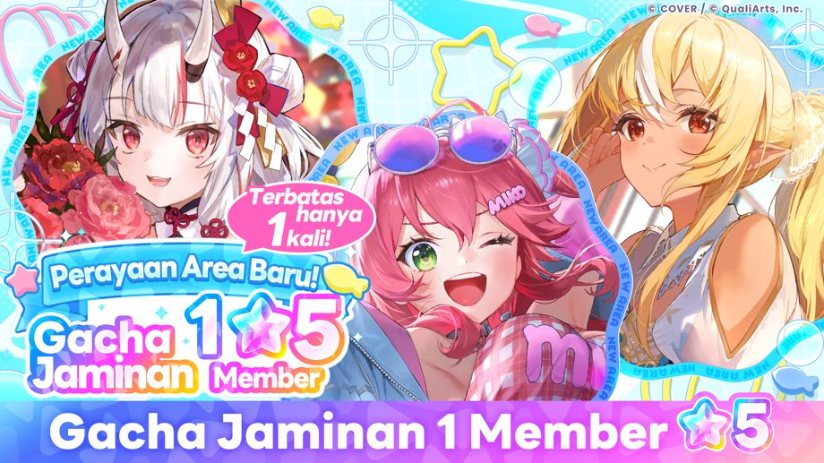

Hanya bisa ditarik 1 kali menggunakan Blue Diamond.
"Perayaan Area Baru! Gacha Jaminan 1 Member ★5" dimulai!
Dalam "Tarik 10x", 1 di antaranya dijamin berupa Member ★5.
Mengenai member ★5 dalam gacha ini, silakan periksa tingkat distribusi gacha.
※Member yang muncul mungkin berbeda dari Gacha lain yang sedang berlangsung.
◆Periode Event
2026-09-29 11:00:00,2026-10-19 10:59:59
Catatan Penting
・Konten dan periode event bisa bisa berubah sewaktu-waktu tanpa pemberitahuan terlebih dahulu.
・Informasi mengenai gacha dapat diperiksa pada [Layar Gacha] → [Detail Gacha] → [Perhatian].
・Untuk detail mengenai gacha ini, silakan periksa [Layar Gacha] → [Detail Gacha] → [Rasio penyediaan].
・Akibat pengaruh kondisi jaringan atau faktor lainnya, dapat terjadi selisih waktu sekitar 1 detik pada waktu mulai dan selesai.